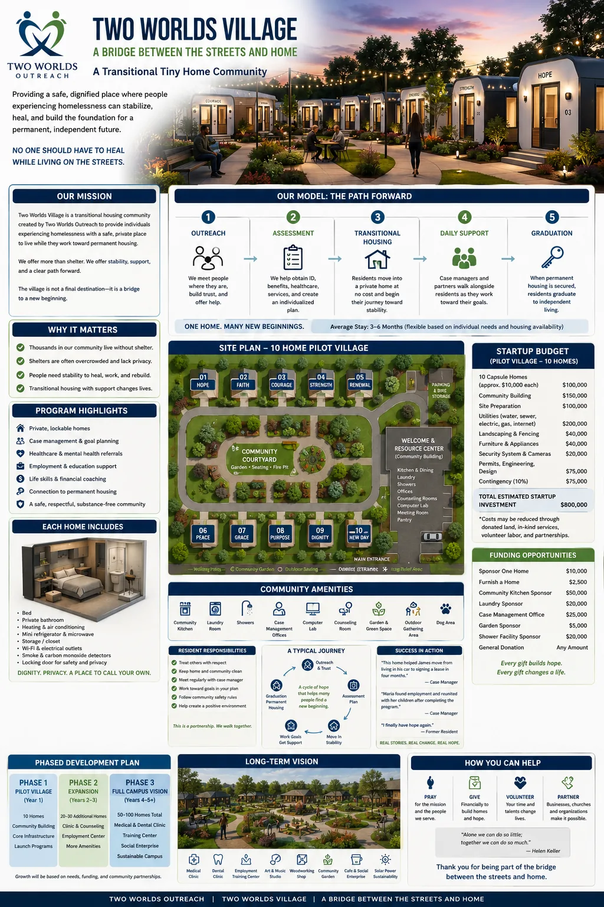
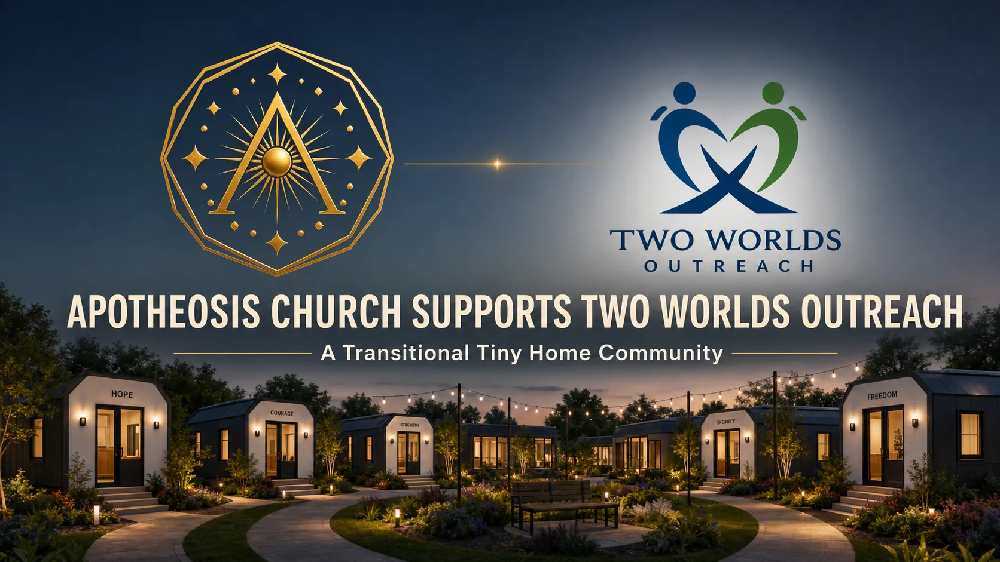
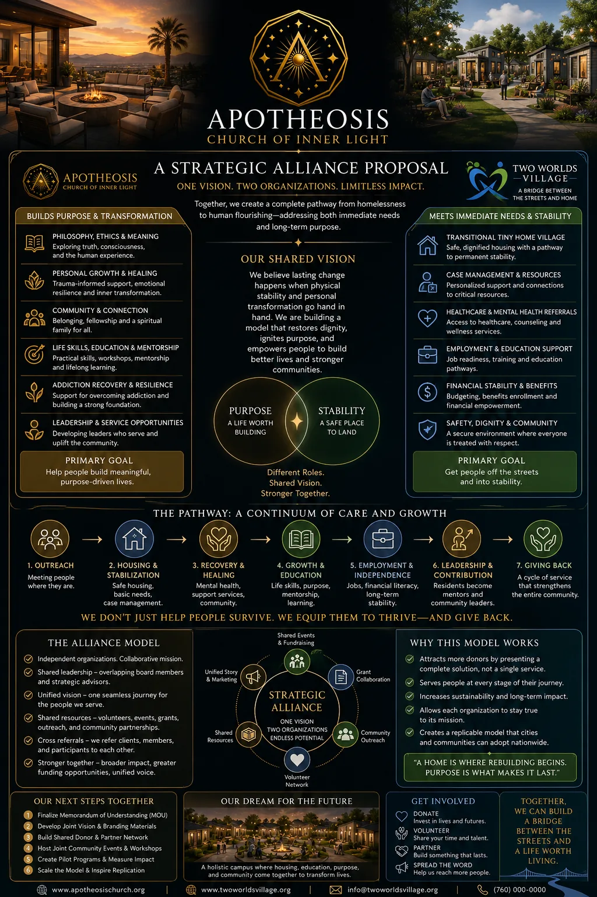

Apotheosis Church and Two Worlds Outreach are joining values, resources, and practical work to support people moving from crisis into stable community.
Our collaboration is built on the same principles that define Apotheosis: truth before comfort, humility before certainty, responsibility over escape, and character proven through accurate understanding and practical service.
Two Worlds Outreach brings transitional housing, case management, and stabilization services. Apotheosis Church contributes mentorship, reflective practice, volunteer support, and community connection. Together we aim to create a bridge from emergency need to lasting stability without claiming that any institution can transform a person on that person's behalf.
Campaign contributions are received and administered by Apotheosis Church. The Church retains control and discretion over disbursements made in furtherance of the transitional-housing initiative.


The initial $15,000 campaign supports responsible planning, professional consultation, project development, and approved expenses that advance the transitional tiny-home community.
Visit the FundraiserWe focus on real results: safe housing, healing relationships, mental health support, skills for independence, and a community culture that treats every person with dignity.
We do not separate the inner work from the outer work. The partnership exists to make both possible in the same place.

Formal agreements and implementation details are being finalized so this alliance can be clearly understood, supported, and sustained.
When the memorandum of understanding and supporting documents are complete, they will be published here for everyone to review.
Current status: active collaboration in operations and planning, with formal documentation under development.
We are building a transparent alliance. The documents that describe our shared responsibilities, goals, and values will be made available once they are finalized.
Until then, this page reflects the current partnership in action and the practical work it is already supporting.